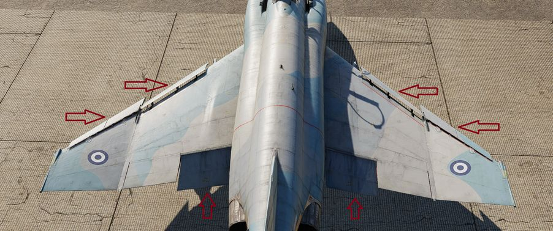
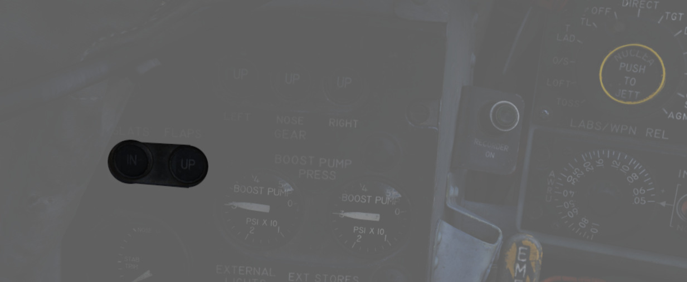
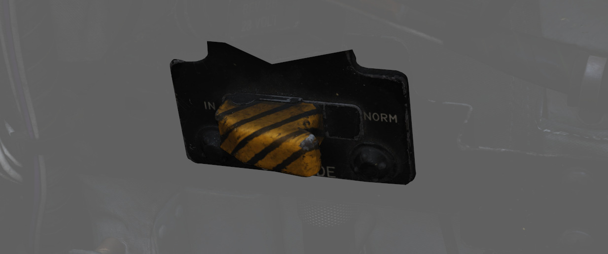
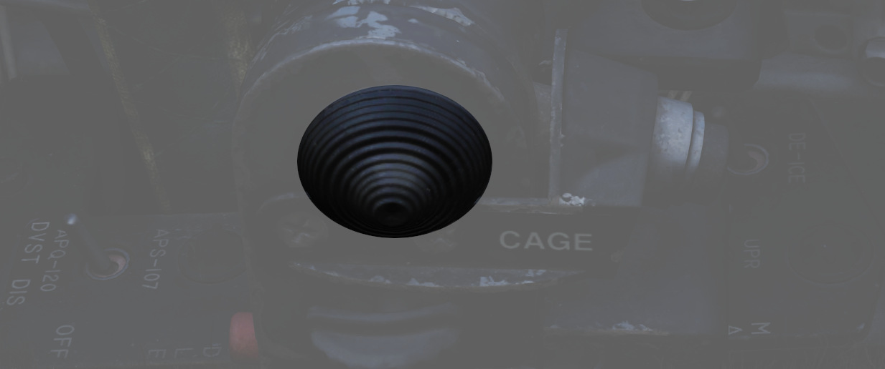
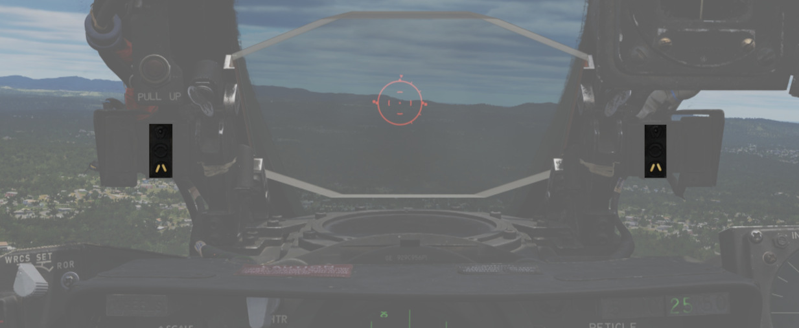
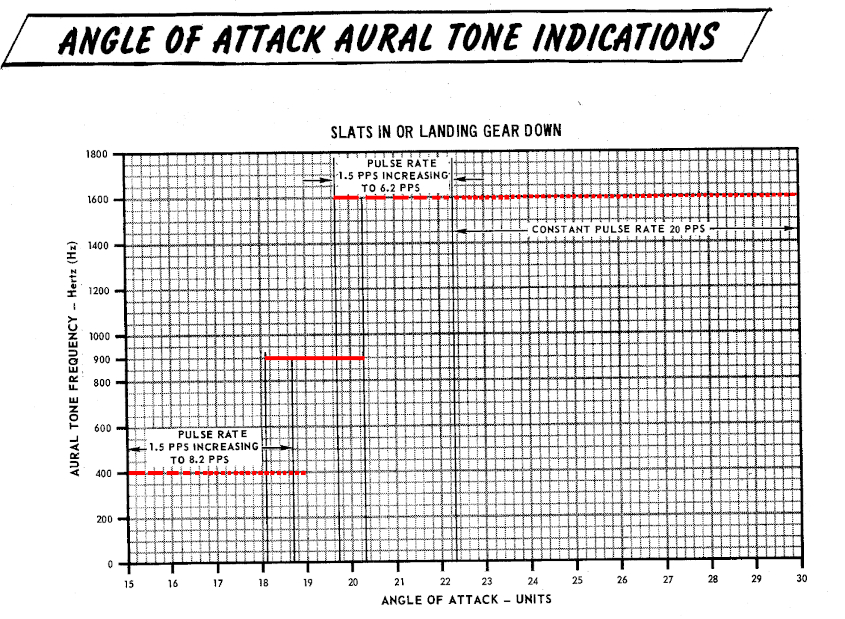

Flight Control Surfaces and System

The flight controls include the slats seen in front of the wing in extended position, the flaps, the rudder, the aileron-spoiler seen on top of the right wing in the picture and rearward stabilizers.
Control Sticks

A control stick is provided in both cockpits, with near-uniform switchology between the two. A Trim Control is found on both sticks to provide force reduction and minor flight path correction in the pitch and roll axis. Weapons are deliverable through both a Trigger (for air-to-air missiles and the gun) and a Bomb Release Switch. Both sticks carry a Nose Wheel Steering button that doubles as a radar auto-acquisition control for the radar in visual range combat, and sensor focus control for video-directed air to ground weapons. An Emergency Quick Release lever on each stick is available to immediately deactivate the anti-skid system, the automatic flight control system, stability augmentation and the aileron-rudder interconnect. Unique to the front cockpit control stick is the Air Refueling Release Button - a dual-role control that performs the boom disconnect function its name implies, as well as a number of weapon selection functions.
Also, unique to the front cockpit stick is a force transducer, to allow the pilot fine adjustment control of the AFCS with the autopilot functionality engaged. In the event the force applied to the stick exceeds the AFCS breakout limit, autopilot will be turned off.
Aileron-Spoiler Control and Stabilator Control Feel and Trim Systems
The Aileron-Spoiler Control System and the Stabilator Control System both offer trim following; the former through a screw jack actuator, the latter using a servo directed by the AFCS. These functions cause the stick to position relative to the current trim and autopilot position when the crew member in control goes "hands off". It is therefore advisable to maneuver the stick to the same position, or to gently move the stick to "breakout force" prior to disengaging the autopilot system to reduce the chance for an abrupt return to pilot control.
To confirm current state of the stabilator trim, a Stabilator Trim Position Indicator is provided on the front cockpit left vertical panel .

Rudder Control System

Yaw axis control is directed by the rudder pedals found in both cockpits. To offset any relative skidding due to wind effect, stores imbalance, or minor engine output deviation, a Rudder Trim Switch is found on the engine control panel in the front cockpit. On the ground, the pedals themselves can be pressed independently for differential braking, and the rudder axis itself functions as the nose wheel steering directional control when the Nose Wheel Steering button on either control stick is pressed.
Aileron-Rudder Interconnect (ARI)
The aileron-rudder interconnect system causes rudder displacement proportional to aileron displacement to provide coordinated turns at low airspeeds. It is engaged automatically with the Slats Flap Switch in the OUT AND DOWN position, and the airspeed below the flap blowup speed (230 knots).
The limits of the system are 15° of rudder displacement when the automatic flight control system is in the stability augmentation or autopilot mode, and 10° rudder displacement when the yaw stab aug switch is disengaged.
The circuit breaker for the ARI is located right of the Emergency stores release.

💡 To permanently disengage the ARI, the circuit breaker on the left utility panel must be pulled and the Yaw STAB AUG switch must be disengaged. Pulling the circuit breaker with the switch still engaged will still provide 5° of ARI rudder authority. When the ARI circuit breaker is pulled, the anti-skid system is disabled as well.
💡 Rudder jump will occur when the ARI system cuts in or out with a lateral control stick input. This will normally occur when the flaps are raised or lowered during a turn.
Emergency Disconnect
In the event either seat in command requires the ARI deactivated, the system can be disconnected by pulling the Emergency Quick Release Lever on their respective control stick. When the switch is released, the ARI (10°) and the Yaw STAB AUG (5°) rudder authority is regained. Function of the ARI can always be overridden through the rudder pedals.
Automatic Flight Control System (AFCS) - AN/ASA-32

The automatic flight control system (AFCS) is an electro-hydraulic system designed to provide stable, accurate, and coordinated flight maneuvers without interfering with manual control. The automatic flight control system is capable of performing two modes of operation, stability augmentation and AFCS.
Stability augmentation improves airplane stability in pitch, roll, and yaw; it opposes any change of attitude but does not return the airplane to a given attitude or ground track. This mode of operation may be used while the aircraft is under manual control. Stability augmentation can be engaged individually or in any combination for pitch, roll, or yaw axis.
Autopilot
The AFCS mode of operation maintains any aircraft heading and/or attitude selected within the AFCS limits and corrects for any deviation from the selected heading or attitude of the aircraft within the AFCS limits. The AFCS switch can be engaged with only the Pitch STAB AUG switch engaged; however, to provide full AFCS operation, all three STAB AUG switches must be engaged. The Altitude Hold Mode of operation holds any altitude selected while in the AFCS mode.
💡 The AFCS system can be engaged and hold maneuvers and attitudes within a range of ±70° pitch, 70° in bank and 360° in azimuth, providing the G limits are not being exceeded. Rapid stabilator movements, whether pilot induced or not, will cause the AFCS switch to disengage.
💡 In the Altitude Hold Mode, altimeter fluctuations while accelerating through the transonic range (0.9 to 1.0 Mach) will produce transient fluctuations which, although not violent, may cause the reference altitude to slip. Engaging the Altitude Hold Mode in climbs greater than 1000 feet per minute may result in a reference altitude other than the engage altitude.
Force Transducer
The force transducer senses the physical force applied to the control stick. This unit comprises the visible portion of the control stick with the stick grip mounted on top of it.
The force transducer contains pressure sensitive switches which react to longitudinal and lateral stick forces. A lateral stick force of approximately 1.5 pounds closes a force switch. When a roll force switch closes the roll rate gyro signal in STAB AUG and the roll rate and attitude gyro signals in AFCS mode are cut out so that pilot initiated maneuvers are not opposed while in the AFCS mode.
The pilot maneuvers the aircraft by mechanical linkages until the lateral stick force is reduced to less than approximately 1.5 pounds. At this time the roll channel is returned to normal AFCS operation. A forward stick force of 3.75 ±0.25 pounds or an aft stick force of 2.55 ±0.25 pounds closes switches to operate certain AFCS components, and cause a force sensing device to send a signal, proportional to the applied stick force, to the servo amplifier and stabilator position is controlled through the AFCS.
If the pitch or roll limits of the AFCS (±70°) are exceeded, the AFCS will disengage. The AFCS switch may or may not disengage. If the switch does not disengage, the AFCS will immediately reengage when the aircraft returns to within the AFCS limits.
G-Limit Accelerometer
The normal load factor interlock (G-disengage) feature of the AFCS is designed to inhibit the system from commanding excessive load factors on the airplane. The system reverts automatically from whatever mode is engaged to stability augmentation in the event that +4 or -1 G is sensed by the G-disengage accelerometer switch.
This switch is mounted forward on the radar bulkhead so that if the airplane is rotated rapidly into a maneuver, disengagement occurs at lower values of normal load factor due to the anticipation resulting from the forward location sensing a component of pitching acceleration.
The G-disengage feature is inoperative outside the ±70° limits of the autopilot.
🔴 WARNING: The G switch does not disengage the autopilot under conditions of low airspeed or heavy gross weight before the aircraft stalls. If the autopilot remains engaged during a stall, the autopilot provides pro-spin controls.
Emergency Quick Release Lever
A spring-loaded emergency quick release lever is on each control stick. This lever operates in the same manner from both the front and the rear cockpits.
Depressing the lever causes the AFCS and altitude hold switch to return to OFF. The stability augmentation mode, ARI and anti-skid, are disengaged as long as the lever is held depressed. When the lever is released, the stability augmentation, anti-skid, and ARI are again in operation, but the AFCS is no longer engaged.
To permanently disengage the stability augmentation mode, the pitch, roll, and yaw STAB AUG switches must be placed off. To permanently disengage the ARI and anti-skid, the yaw STAB AUG switch must be off and the ARI circuit breaker, on the front cockpit left sub-panel, must be pulled.
Autopilot Disengage Indicator Light
An AUTOPILOT DISENGAGE indicator light is on the telelight panel. After initial engagement of the AFCS mode, the AUTOPILOT DISENGAGE indicator light and the MASTER CAUTION light illuminates when the AFCS is disengaged.
Both lights are extinguished by pressing the master caution reset switch. The lights remain extinguished until the AFCS is again engaged and disengaged.
Pitch Aug Off Indicator Light
The PITCH AUG OFF indicator light on the telelight panel illuminates together with the MASTER CAUTION light when the Pitch STAB AUG switch is not engaged despite the aircraft being powered.
Depressing the master caution reset button extinguishes the MASTER CAUTION light. However, the PITCH AUG OFF light remains illuminated until the Pitch STAB AUG switch is engaged.
Automatic Pitch Trim
An automatic pitch-trim feature is included in the AFCS which attempts to keep the airplane longitudinally trimmed to the flight conditions experienced while in AFCS mode.
Thus, an out-of-trim condition (which would not be sensed while in autopilot mode) is prevented, ensuring against an excessive pitch transient when disengaging the autopilot.
The automatic pitch trim operates at approximately 40% the speed of the normal trim system, resulting in a slight delay after changing flight conditions before the basic airplane is properly trimmed. During control stick steering maneuvering, the auto-trim is inoperative. Auto-trim operation can be observed on the pitch trim indicator after changing flight conditions in the AFCS mode.
Autopilot Pitch Trim Light
The AUTOPILOT PITCH TRIM indicator light on the telelight panel illuminates during AFCS operation if the automatic pitch trim follow up is inoperative or lagging sufficiently behind airplane maneuvering to cause an out-of-trim condition in the basic airplane.
Normal Operation
- To engage the stability augmentation mode, place the pitch, roll, and yaw STAB AUG switches to ENGAGE.
- Trim aircraft in the stability augmentation mode before engaging AFCS mode.
- To engage AFCS mode, establish an aircraft attitude within AFCS limits. Place the AFCS switch to ENGAGE.
- When altitude hold mode is desired, place the Altitude Hold switch to ENGAGE.
🔴 WARNING: Do not attempt to change pitch attitude of the aircraft from the rear cockpit in the AFCS mode. Since no force-transducer is in the rear cockpit control stick, applying force will cause pitch trim to run up and down depending on pressure applied. If the pilot attempts to take control at that point, violent transients may be encountered.
💡 Do not operate the manual trim button while in the AFCS mode unless the AUTOPILOT PITCH TRIM light is illuminated. Use a small amount of manual trim to extinguish the AUTOPILOT PITCH TRIM light.
💡 To change altitude when operating in Altitude Hold, use the control stick. This disengages the Altitude Hold circuits and the Altitude Hold switch moves to OFF. Re-engage Altitude Hold at the new altitude if desired.
💡 The AFCS is disengaged when the Emergency Quick Release Lever on the control stick is depressed. The stability augmentation and ARI are disengaged as long as the lever is held depressed but returns to operation when the lever is released.
Slats Flap System

The Slats Flap system is manually selected for takeoff and landing, then automatically controlled relative to AoA for best handling performance in all other flight regimes. Control is through a three position switch found outboard of the left throttle handle in the front cockpit and driven by the aircraft hydraulic system. The three switch positions are Norm, Out, and Out and Down, and the resulting command can be moderated based on whether or not the landing gear is being deployed.

Norm is the standard in-flight position, locking the Flaps and automatically programming the Slat deployment as a function of AoA.
Out deploys the Slats to their fully deployed position. Should the landing gear be deployed, both the Slats and Flaps will deploy.
Out and Down fully deploys both the Slats and the Flaps. Should the landing gear not be down, the Wheels Light on the telelight Panel will illuminate and flash.
Both cockpits have a Slats Flap Indicator, which read In and Out, along with a barber-pole reading when the surfaces are in transition.

In the Norm position, Maneuvering Slat deployment is a function of AoA; above 11.5 units they will extend, then retract when the aircraft is reduced below 10.5 units. Maneuvering Slat operation includes a speed-induced blowback; slats will retract due to air pressure between 568 and 602 knots.

To the rear of the Fuel Control Panel in the front cockpit is the Slat Override Switch. Guarded, this switch has two positions: NORM and IN. Defaulted to NORM under the guard, switching to IN forces the retraction of the slats, no matter the current aircraft AoA or state of the Slats Flap Switch position; this action will trigger the SLATS IN warning on the telelight Panel and illuminate the Master Caution.
The Slats Flaps system also has an Emergency system; handles are found on the Slats Flaps control panel in the front cockpit, and next to the rear cockpit throttle pair. The emergency system uses pneumatic pressure, and does not require electrical power to force deployment. The emergency system can only function once, and can be actuated at any airspeed; however, above 230 knots, the Flaps will retract based on air pressure, and the normal Slat retraction speeds also apply.
Speed Brakes

Underneath the aircraft and close to the rear Sparrow recesses are the speed brakes, installed on the wings. The speed brakes are driven by the aircraft's hydraulic system and actuated by a three position switch found on the inboard throttle in both cockpits. Either switch will actuate the brakes. The positions are Out, Stop, and In; the Out position is momentary and reverts back to Stop when released.

Brake actuation illuminates the Speed Brake Out Indicator Light found on the telelight Panel. Brake deployment and illumination of the Indicator does not trigger the Master Caution.

Angle of Attack System

To precisely monitor and control aircraft flight performance, the Angle of Attack System (AoA) provides visual and audio confirmation of current parameters. Included in the system are the Angle of Attack Indicators found in both cockpits, the illuminated Angle of Attack Indexers, as well as the AoA Aural Tone System.
The angle of attack is typically measured in degrees (°). It represents the deviation from the alignment of the chord line of the airplane with the oncoming air or relative wind.
Indicators

The Angle of Attack Indicator dials register AoA values from 0 to 30 units, with indications for weight-relative optimum altitude cruise (7.9 units), approach (19.2 units), and stall (30 units). The AoA Indexer only works when the gear is in the down position.
AoA units do not directly translate to degrees, one unit of AoA is the same as roughly 0.95 degrees and the measured AoA is also offset by about 4 degrees. This way, the indicator displays a more natural and useful value to the crew.
💡 Extension of the landing gear and thus the nose gear door changes the airflow around the probe causing to indicate higher angles by 1 unit. The approach airspeeds account for that. Therefore, performing an approach with the gear retracted, will cause the indicators to show approximately 1 unit low, and the aircraft will be roughly 5 knots fast for an on-speed approach.
Indexers

The AoA Indexers, found on the windshield frame of the front cockpit, and above the instrument panel in the rear, display color coded and directional symbology for the on-speed approach value of 19.2 units once the landing gear have been lowered.
Aural Tone System


The Aural Tone System provides audible feedback in maneuvering flight and during landing configuration. Beginning above 15 units AoA with gear down, and 21 units AoA with the gear up and slats in, a pulse will be heard by both crew-members.
The rate of the pulse can vary from 1.5 to 20 pulses per second, with increasing frequency based on higher AoA values.
This tone can be lowered in volume below 20.3 units AoA gear down/25 units gear up with controls in each cockpit; exceeding these values will cause the system to override the volume limits and deliver the warning pulses at a minimum volume to ensure they are audible regardless of volume setting.
💡 The respective knobs are labelled STALL WARNING and can be found on the right side in either cockpit. They must not to be confused with the AURAL TONE CONTROL knobs, which control weapon related tones.
Due to limited forward visibility, the tones are a crucial aid during landing. If a low pitch tone playing at a pulse is heard, the aircraft is too fast. If a high pitch tone playing at a pulse is heard, the aircraft is too slow. For the proper on-speed configuration, a steady tone at a medium pitch is played.
Stall Warning Vibrator
The left front cockpit pedal includes a Stall Warning Vibrator, which is activated over 22.3 units Angle of Attack. This physical (and in DCS audible) indication is given to make the pilot aware of the potential of an impending stall and provide enough time to reduce AoA and prevent the loss of control of the aircraft. Reducing AoA below the threshold will deactivate the warning.